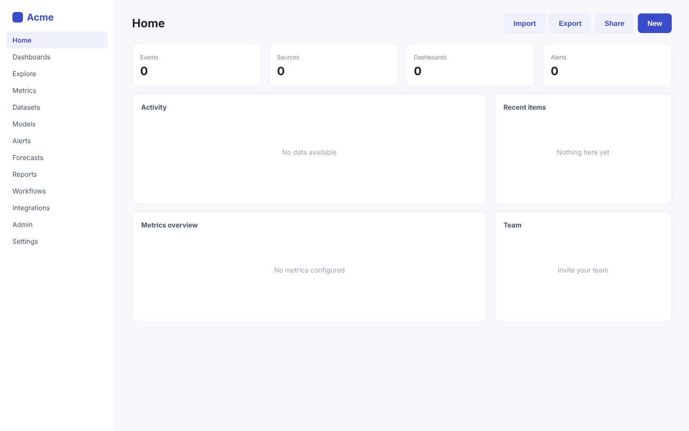
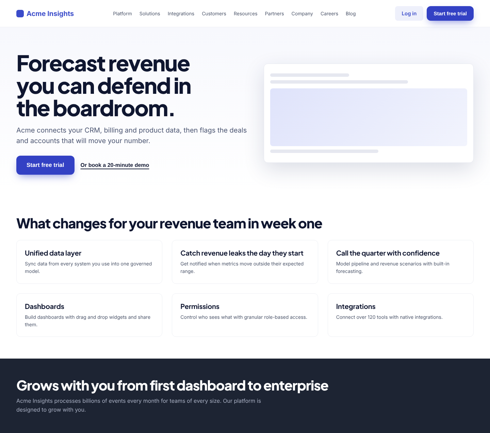
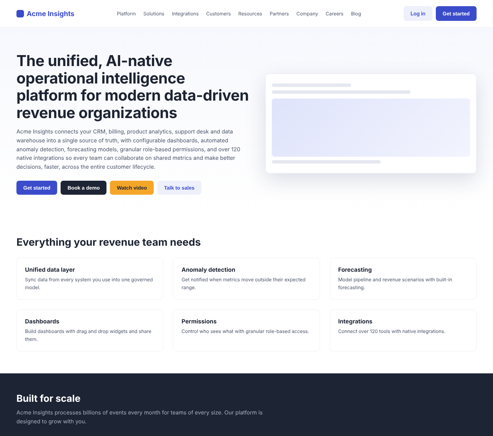
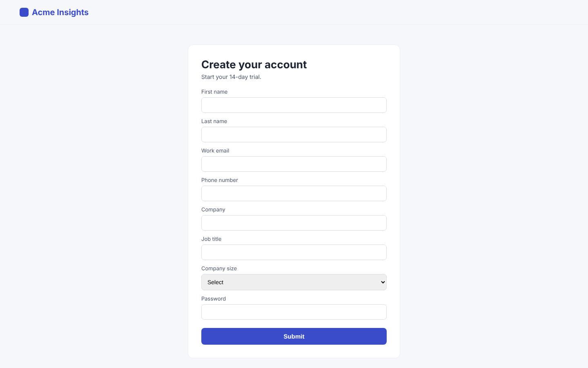

Sample report
Acme Insights
https://acme-insights.example · SaaS web application · October 18, 2026
Overall audit score
60% UX & UI · 40% AI & search
0/100
Executive UX & UI
Growth readiness of the experience
0/100
AI & search visibility
SEO and GEO readiness
0/100
Executive summary
Acme Insights has a capable product hidden behind category language and an unguided first session. Three blockers account for most of the lost growth: a headline that does not state an outcome, a hero with four competing actions, and an empty first-run dashboard. All three can be addressed within two sprints, and the first two within days.
Score breakdown
The headline names a category rather than an outcome, and the subheading lists capabilities.
Eight-field sign-up followed by an empty dashboard with no guided first step.
Five calls to action across header and hero; primary action below the fold on mobile.
Nine marketing navigation items and thirteen in-app destinations at equal weight.
Clean layout, but dense hero copy and equal-weight modules dilute priority.
No logos, testimonials, quantified outcomes or security information.
Top 3 critical issues
The changes with the largest expected effect on growth.
Headline describes a category, not an outcome
Business impact
This is the highest-traffic element on the site. A vague headline suppresses visitor-to-signup conversion on every paid and organic visit and weakens recall in competitive evaluations.
How to fix it
Lead with the outcome and the buyer in under ten words, for example “Forecast revenue you can defend in the board meeting.” Move “AI-native” and integration claims to the subheading. A/B test two outcome-led variants against the current headline.

First session lands on an empty dashboard
Business impact
Directly caps trial-to-paid conversion. For a data product, time-to-first-insight is the strongest predictor of conversion and retention.
How to fix it
Replace the empty home with a three-step setup checklist (connect a source, pick a template dashboard, invite a teammate) with progress, and load a sample dataset so every panel shows a realistic preview until real data arrives.

Four equal-weight actions compete in the hero
Business impact
Traffic splits across low-value paths such as the video, reducing the share that reaches trial signup, which is the metric this audit was asked to improve.
How to fix it
Keep one primary button (“Start free trial”) and one secondary text link (“Book a demo”). Remove “Watch video” from the hero and embed the video lower on the page. Use a single accent color for the primary action site-wide.
AI & search visibility
SEO and GEO: how well search engines and AI answer engines can find, read and cite you.
AI & search health
Reach 80% for strong AI and search visibility
74%
AI and search crawler access
2 blockedFrom your robots.txt.
- AllowedClaudeClaudeBot
- BlockedChatGPTGPTBot
- AllowedChatGPT searchOAI-SearchBot
- AllowedPerplexityPerplexityBot
- AllowedGeminiGoogle-Extended
- BlockedCommon CrawlCCBot
- AllowedGoogle SearchGooglebot
- AllowedBingBingbot
robots.txt
Found
sitemap.xml
Found
llms.txt
Missing
Your page, with every fix applied.
The hero now promises a defensible forecast in seven words, with one primary action and a quiet demo link, set in a bolder type system built on Acme's indigo. Feature cards describe results instead of capabilities.
Projected UX score
+26 points if these changes ship
An estimate from the findings this redesign addresses. Validate with an A/B test.
Before and after
Drag the handle to compare. Green numbers mark the copy that changed.


Copy changes
Rewritten from the report's insights. The numbers match the markers on the after image.
Before
The unified, AI-native operational intelligence platform for modern data-driven revenue organizations
After
Forecast revenue you can defend in the boardroom.
Names the buyer's outcome in seven words; category language moves out of the hero.
Before
Acme Insights connects your CRM, billing, product analytics, support desk and data warehouse into a single source of truth, with configurable dashboards, automated anomaly detection, forecasting models, granular role-based permissions, and over 120 native integrations so every team can collaborate on shared metrics and make better decisions, faster, across the entire customer lifecycle.
After
Acme connects your CRM, billing and product data, then flags the deals and accounts that will move your number.
One 20-word sentence that says how, replacing a 54-word list of features.
Before
Get started
After
Start free trial
Says what happens next and signals there is no commitment.
Before
Book a demo
After
Or book a 20-minute demo
Framed as the alternative, with a time cost, so it supports the primary action instead of competing with it.
Before
Everything your revenue team needs
After
What changes for your revenue team in week one
Turns a feature roundup into a promise the cards then prove.
Before
Anomaly detection
After
Catch revenue leaks the day they start
States the result of the feature, not its name.
Before
Forecasting
After
Call the quarter with confidence
Speaks to the job the revenue leader is hiring the product for.
- 8Section heading
Before
Built for scale
After
Grows with you from first dashboard to enterprise
A specific promise gets read; a generic one gets skipped.
Styleguide: Acme Outcome UI
A design system built from your brand and the report's insights. Download it as CSS tokens for your team.
Hero specimen
Forecast revenue you can defend in the boardroom.
Acme connects your CRM, billing and product data, then flags the deals and accounts that will move your number.
Color
Acme Indigo
#3341c4
primary · 7.8:1 AA
On indigo
#ffffff
on primary
Midnight
#0f1630
ink · 17.8:1 AA
Slate
#4a5470
muted · 7.5:1 AA
Paper
#ffffff
background
Mist
#f3f5ff
surface
Signal amber
#ffb547
accent
Proof green
#0f8a5f
success · 4.4:1 AA large
Typography
Plus Jakarta Sans · Inter
Voice rules
- Lead with the revenue outcome, then say how.
- One idea per sentence, under 20 words.
- Buttons are verb plus object: Start free trial, not Get started.
- Back every claim with a number, a customer or a screenshot.
- Say forecast, pipeline and churn, never operational intelligence.
Radius 12px · spacing grid 8px
Current vs new
| Headline | 44px · 700 | 64px · 800 |
| Heading font | -apple-system | Plus Jakarta Sans |
| Primary button | rgb(238, 240, 251) | #3341c4 |
| Body line height | 1.50 | 1.65 |
| Hero actions | 4 | 2 |
Everything that changed
Each change is tied to the finding it fixes.
Outcome-led headline
“Forecast revenue you can defend in the boardroom.” replaces a 13-word category description.
Bolder, larger headline
The headline moves from 44px / 700 to 64px / 800 in Plus Jakarta Sans with tighter tracking, so it is the first thing the eye lands on.
Hero actions cut from 4 to 2
“Watch video” and “Talk to sales” leave the hero. “Start free trial” is the single filled button, and the demo is a text link.
- hierarchyF6Hero copy is too dense to scan
Hero copy cut from 54 to 20 words
The supporting paragraph becomes one sentence at 20px with a 34em line length.
Feature cards sell results
Section and card headings describe what changes for the team, not the feature name.
- contrast
Accessible brand indigo
Primary deepens from #3b4cca to #3341c4 so white button text clears WCAG AA with room to spare (7.4:1).
- spacing
Consistent rhythm
Buttons and cards share a 12px radius and an 8px spacing grid.
Headline describes a category, not an outcome
Problem
The hero headline “The unified, AI-native operational intelligence platform for modern data-driven revenue organizations” is 13 words of category language. It never says what a revenue leader gets, or how fast.
Why it matters
Visitors decide in seconds whether a page is relevant. Abstract category terms force them to translate the claim into value themselves, and most leave before they do.
Business impact
This is the highest-traffic element on the site. A vague headline suppresses visitor-to-signup conversion on every paid and organic visit and weakens recall in competitive evaluations.
Recommended fix
Lead with the outcome and the buyer in under ten words, for example “Forecast revenue you can defend in the board meeting.” Move “AI-native” and integration claims to the subheading. A/B test two outcome-led variants against the current headline.
Four equal-weight actions compete in the hero
Problem
“Get started”, “Book a demo”, “Watch video” and “Talk to sales” sit side by side with four different colors. The header adds a fifth “Get started”. No action is clearly primary.
Why it matters
When every option looks equally important, visitors hesitate or pick the least committal one. Choice overload is the most common cause of hero-section drop-off.
Business impact
Traffic splits across low-value paths such as the video, reducing the share that reaches trial signup, which is the metric this audit was asked to improve.
Recommended fix
Keep one primary button (“Start free trial”) and one secondary text link (“Book a demo”). Remove “Watch video” from the hero and embed the video lower on the page. Use a single accent color for the primary action site-wide.
First session lands on an empty dashboard
Problem
After sign-up, new users see four KPI tiles reading 0 and four panels reading “No data available”. There is no checklist, sample data or guidance on connecting the first source.
Why it matters
Activation depends on reaching a first meaningful result quickly. An empty state with no next step leaves new users to figure out setup on their own, which is where most trials stall.
Business impact
Directly caps trial-to-paid conversion. For a data product, time-to-first-insight is the strongest predictor of conversion and retention.
Recommended fix
Replace the empty home with a three-step setup checklist (connect a source, pick a template dashboard, invite a teammate) with progress, and load a sample dataset so every panel shows a realistic preview until real data arrives.
Sign-up form asks for eight fields before any value
Problem
The trial form requires first name, last name, work email, phone number, company, job title, company size and password. The submit button is labelled “Submit”.
Why it matters
Completion rates fall sharply after three or four fields, and phone number is the field most associated with abandonment because it signals a sales call.
Business impact
Direct loss of trial starts at the highest-intent moment in the funnel.
Recommended fix
Reduce to work email and password, or Google sign-in. Collect role and company size inside the product after the first dashboard loads. Rename the button to “Start 14-day trial”.

No customer proof anywhere on the page
Problem
There are no customer logos, testimonials, case studies or usage numbers. The only proof is the unsupported claim “processes billions of events every month”.
Why it matters
For a buyer evaluating a system that will hold revenue data, evidence from similar companies is the strongest de-risking signal available.
Business impact
Lengthens sales cycles, lowers demo-to-close rates, and reads as weak traction to investors reviewing the product.
Recommended fix
Add a logo strip directly below the hero and one quantified customer outcome (metric, name, role, company) next to the primary call to action. Turn the “Built for scale” band into a proof section with real numbers.

Primary action falls below the fold on mobile
Problem
On a 390px screen the four-line headline fills the first view. Visitors must scroll past the full subheading before reaching any button.
Why it matters
A large share of first visits from social, email and ads happen on mobile, and intent drops with every scroll required.
Business impact
Lower mobile conversion drags down blended acquisition efficiency.
Recommended fix
Shorten the mobile headline, hide the long subheading below 640px, and add a sticky bottom bar with the single primary action.

Thirteen navigation items before the first insight
Problem
The app sidebar lists 13 destinations, including Datasets, Models, Workflows and Admin, all at the same level as Home.
Why it matters
New users cannot tell which areas matter now and which are for later. Equal weighting increases the time to find the core workflow.
Business impact
Slower activation and lower adoption of the features that drive retention.
Recommended fix
Group navigation into Analyze (Dashboards, Explore, Alerts), Build (Metrics, Datasets, Models) and Admin. Collapse the Build and Admin groups for new accounts.
Hero copy is too dense to scan
Problem
The subheading is a 60-word single sentence listing six capabilities and an integration count.
Why it matters
Dense hero copy raises cognitive load and dilutes the one message that should land. Executives and mobile visitors skim, they do not read.
Business impact
Lower message recall and lower engagement with the primary action.
Recommended fix
Cut the subheading to one sentence of under 20 words that supports the headline outcome. Move the capability list into the features section.
Navigation exposes nine top-level choices and no pricing
Problem
The header lists Platform, Solutions, Integrations, Customers, Resources, Partners, Company, Careers and Blog. Pricing is not linked.
Why it matters
Long navigation pulls attention from the conversion path, and hiding pricing pushes self-qualifying buyers to leave and compare elsewhere.
Business impact
More drift into low-intent pages, fewer self-serve trials, and more unqualified demo requests.
Recommended fix
Reduce to Product, Customers, Pricing and Resources. Move Partners, Company, Careers and Blog into the footer. Show at least the starting price or plan structure.
Toolbar offers four actions with no clear primary
Problem
Import, Export, Share and New sit together on the home screen. On an empty account, Export and Share do nothing useful.
Why it matters
Irrelevant actions add noise and imply the product is complex before the user has done anything.
Business impact
Adds friction to the first session and reduces perceived ease of use.
Recommended fix
On empty accounts show only “Connect a data source”. Reveal Export and Share once a dashboard exists.
Feature section lists capabilities, not results
Problem
Cards such as “Unified data layer” and “Permissions” describe what the product has. None states what a revenue leader achieves with it.
Why it matters
Buyers compare outcomes. Feature lists look interchangeable with every competitor in the category.
Business impact
Weaker differentiation and more price pressure in competitive deals.
Recommended fix
Rewrite each card as a result with a number where possible, for example “Catch pipeline risk two weeks earlier” instead of “Anomaly detection”.
Security posture is invisible for a data platform
Problem
A product that connects CRM, billing and warehouse data shows no mention of security, compliance or data handling.
Why it matters
Security review is a mandatory step for this category of purchase. Missing information delays deals at procurement.
Business impact
Longer enterprise sales cycles and avoidable losses at the security review stage.
Recommended fix
Add a security band with compliance status, encryption and data residency, linking to a dedicated trust page.
Crawled pages (10)
Pages we fetched on acme-insights.example to check indexing, metadata, speed and AI access.
| Page | Status | Indexable | Words | Load | Issues |
|---|---|---|---|---|---|
/ Acme Insights: AI-native operational intelligence | 200 | Yes | 412 | 1.8s | 9 |
/pricing Pricing | Acme Insights | 200 | Yes | 520 | 1.3s | 4 |
/signup Sign up | Acme Insights | 200 | Yes | 64 | 0.8s | 7 |
/features Features | Acme Insights | 200 | Yes | 860 | 3.1s | 9 |
/blog Acme Insights Blog | 200 | Yes | 310 | 1.4s | 5 |
/blog/revenue-forecasting-guide Acme Insights Blog | 200 | Yes | 1,840 | 5.4s | 7 |
/about About Acme Insights | Our mission and team | 200 | Yes | 290 | 1.0s | 2 |
/security Security | Acme Insights | 200 | No | 180 | 0.9s | 8 |
/integrations 120+ integrations for your revenue stack | Acme | 200 | Yes | 640 | 1.6s | 4 |
/docs Documentation | Acme Insights | 200 | Yes | 450 | 1.1s | 6 |
Captured screens (5)
Every screen we analyzed for UX and UI, with how many findings were pinned on it.
4Home: above the fold
Desktop · 1440×900
3Home: features section
Desktop · 1440×900
Sign up
Desktop · 1440×900
In-app: first screen after sign-in
Desktop · 1440×900
1Mobile: above the fold
Mobile · 390×844
Visual annotations
Every captured screen with its findings pinned in place. Hover or tap a comment to locate it.
Statistics
The numbers behind the scores, across both audit pillars.
Overall audit score
0/100
UX & UI score
0/100
AI & search visibility
0/100
Total issues
0
Issues by severity
UX & UI findings plus AI & search issues
UX & UIAI & search
Where the UX score loses points
Points lost per criterion after weighting. Fix the top rows first.
Impact vs effort
How many findings sit in each cell. Top-left is the best return.
Findings by area
Findings per screen
AI & search checks
32 checks across 10 crawled pages
0
Passed
0
Warnings
0
Errors
9/10
Indexable pages
1/10
With structured data
6/8
AI crawlers allowed
Load time per page
Seconds to load the HTML. Over 2.5s is marked.
Insights
Your next steps and the jobs to get done to raise the score. Check tasks off as you ship them.
Your path to 80+
Today
58
With all tasks done
82
35 tasks across both pillars. Scores are estimates.
7
This week
2
This month
26
Next sprint
Next steps
Step 1
This week
High impact, low effort · 7
- Fix: AI crawlers allowedGEO · AI answers · low effort+25
- Fix: Fast page responseSEO · search · low effort+25
- Headline describes a category, not an outcomeUX & UI · low effort+17
- Four equal-weight actions compete in the heroUX & UI · low effort+17
- Sign-up form asks for eight fields before any valueUX & UI · low effort+10
- No customer proof anywhere on the pageUX & UI · low effort+10
- +1 more in the jobs below
Step 2
This month
High impact, bigger lift · 2
Step 3
Next sprint
Quick wins to batch · 26
- Fix: Meta description presentSEO · search · low effort+12
- Fix: Image alt textSEO · search · low effort+12
- Hero copy is too dense to scanUX & UI · low effort+8
- Navigation exposes nine top-level choices and no pricingUX & UI · low effort+8
- Toolbar offers four actions with no clear primaryUX & UI · low effort+8
- Feature section lists capabilities, not resultsUX & UI · low effort+8
- +20 more in the jobs below
Jobs to be done
Grouped by the outcome each one improves, biggest score gap first.
UX & UI · Value proposition clarity
When a buyer lands on the page, they understand within five seconds what changes for them and why it matters.
41 → ~66
0/2 done
Headline describes a category, not an outcome
Lead with the outcome and the buyer in under ten words, for example “Forecast revenue you can defend in the board meeting.” Move “AI-native” and integration claims to the subheading. A/B test two outcome-led variants against the current headline.
Feature section lists capabilities, not results
Rewrite each card as a result with a number where possible, for example “Catch pipeline risk two weeks earlier” instead of “Anomaly detection”.
UX & UI · Onboarding friction
When a new user signs up, they reach their first real result without help or guesswork.
38 → ~65
0/2 done
First session lands on an empty dashboard
Replace the empty home with a three-step setup checklist (connect a source, pick a template dashboard, invite a teammate) with progress, and load a sample dataset so every panel shows a realistic preview until real data arrives.
Sign-up form asks for eight fields before any value
Reduce to work email and password, or Google sign-in. Collect role and company size inside the product after the first dashboard loads. Rename the button to “Start 14-day trial”.
UX & UI · Conversion path
When someone is ready to act, the next step is obvious, close and low-risk.
52 → ~79
0/2 done
Four equal-weight actions compete in the hero
Keep one primary button (“Start free trial”) and one secondary text link (“Book a demo”). Remove “Watch video” from the hero and embed the video lower on the page. Use a single accent color for the primary action site-wide.
Primary action falls below the fold on mobile
Shorten the mobile headline, hide the long subheading below 640px, and add a sticky bottom bar with the single primary action.
UX & UI · Trust signals
When a buyer evaluates the product, they find proof that it works for teams like theirs.
44 → ~62
0/2 done
No customer proof anywhere on the page
Add a logo strip directly below the hero and one quantified customer outcome (metric, name, role, company) next to the primary call to action. Turn the “Built for scale” band into a proof section with real numbers.
Security posture is invisible for a data platform
Add a security band with compliance status, encryption and data residency, linking to a dedicated trust page.
AI & search · AI search access
When someone asks ChatGPT, Claude, Perplexity or Gemini about your category, your pages can be read and cited.
46 → ~100
0/7 done
Fix: AI crawlers allowed
Unless blocking is a deliberate policy, replace the blocking groups in robots.txt with an explicit allow for each crawler, e.g. "User-agent: GPTBot / User-agent: CCBot / Allow: / / Disallow: /app/" (keep private app paths disallowed). Re-test with each vendor's robots checker, then watch server logs for the crawlers returning within a few days.
Fix: Question-and-answer content
Add an FAQ section to the home, pricing and product pages with 5-8 real buyer questions as H2/H3 headings ("How long does setup take?", "How is pricing calculated?") and 40-60 word direct answers, and mark it up with FAQPage JSON-LD.
Fix: Answer-ready summary
Directly under the H1, add a 40-80 word paragraph that reads as a definition: "Acme Insights is a revenue analytics platform for B2B SaaS revenue teams that forecasts pipeline and flags risk two weeks earlier. It connects CRM, billing and product data in minutes, and is used by <proof>." Assistants lift this kind of sentence verbatim.
Fix: Author and publisher signals
Show a byline with the author's name, role and a link to their profile page, and add Article JSON-LD with "author" (Person with name, url, sameAs LinkedIn) and "publisher" (your Organization). Expertise signals make content more likely to be cited.
Fix: Citable facts and numbers
Add 3-5 sourced facts per key page: customer count, a quantified customer result ("cut forecast error by 32% at Northwind"), setup time, number of integrations and starting price. Put each in its own short sentence so it can be quoted on its own.
Fix: llms.txt
Publish /llms.txt as Markdown: "# Acme Insights" on the first line, a "> one-sentence summary of what it is and who it is for", a short paragraph on key facts (category, pricing model, integrations), then "## Product", "## Pricing", "## Docs" and "## Customers" sections, each a list of "- [Page title](absolute URL): one-line description". Keep it under 100 lines and update it with each launch.
Fix: Freshness signals
Add "datePublished" and "dateModified" to each page's JSON-LD, show "Updated <month year>" on docs and articles, and send an accurate Last-Modified header from the server or CDN.
UX & UI · Cognitive load
When a user opens the product, they see only what they need for the task at hand.
55 → ~73
0/2 done
Thirteen navigation items before the first insight
Group navigation into Analyze (Dashboards, Explore, Alerts), Build (Metrics, Datasets, Models) and Admin. Collapse the Build and Admin groups for new accounts.
Toolbar offers four actions with no clear primary
On empty accounts show only “Connect a data source”. Reveal Export and Share once a dashboard exists.
UX & UI · Hierarchy and information density
When people scan a screen, the most important thing is the first thing they read.
63 → ~79
0/2 done
Hero copy is too dense to scan
Cut the subheading to one sentence of under 20 words that supports the headline outcome. Move the capability list into the features section.
Navigation exposes nine top-level choices and no pricing
Reduce to Product, Customers, Pricing and Resources. Move Partners, Company, Careers and Blog into the footer. Show at least the starting price or plan structure.
AI & search · Titles, descriptions & sharing
When your page appears in search or a shared link, its title and description make people click.
75 → ~100
0/5 done
Fix: Meta description present
Add a 70-160 character meta description to each page that states who it is for and the outcome it delivers.
Fix: Unique page titles
Write a distinct title for each page so search engines and AI assistants can tell them apart.
Fix: Title length (30-60 characters)
Rewrite titles to 30-60 characters: the page's specific topic or outcome first, then the brand name.
Fix: Description length (70-160 characters)
Keep descriptions between 70 and 160 characters so they are not truncated or padded in results.
Fix: Open Graph sharing tags
Add og:title, og:description and a 1200x630 og:image to every page (and twitter:card).
AI & search · Speed & page weight
When a visitor opens a page, it loads before they lose interest.
73 → ~100
0/2 done
Fix: Fast page response
Cache HTML at the edge (CDN), reduce server work per request and pre-render marketing pages statically.
Fix: Lean HTML
Move inline data, SVG sprites and scripts out of the HTML and lazy-load below-the-fold content.
AI & search · Structured data
When engines and AI assistants read your pages, they understand what your company and product are.
82 → ~100
0/3 done
Fix: Structured data (JSON-LD)
Add a <script type="application/ld+json"> block to the home page with an @graph of: Organization (name, url, logo, sameAs), WebSite (name, url) and SoftwareApplication (name, applicationCategory "BusinessApplication", operatingSystem "Web", offers with price and priceCurrency, aggregateRating if you have reviews). Validate with Google's Rich Results Test and the Schema.org validator.
Fix: Organization or product schema
Add Organization (name, logo, sameAs social profiles) and WebSite schema site-wide, plus SoftwareApplication or Product schema on product and pricing pages.
Fix: Brand entity defined
Add site-wide Organization JSON-LD with "name", "url", "logo" (absolute URL to a square PNG), "description" and "sameAs" listing LinkedIn, Crunchbase, G2, GitHub and X profile URLs. Use the exact same company name everywhere.
AI & search · Content structure
When a page is read by a person or a model, its headings and copy explain it clearly.
74 → ~100
0/4 done
Fix: Image alt text
Add descriptive alt text to meaningful images (product screenshots, diagrams, logos) and alt="" to purely decorative ones.
Fix: One H1 per page
Use exactly one H1 per page that states the page's main topic; demote other headings to H2.
Fix: Substantial page content
Expand key pages with specific, answer-style copy: who it is for, the problem, how it works, proof and FAQs.
Fix: Logical heading outline
Structure each page as H1 (page topic), H2 per section phrased as the question or benefit it covers, and H3 for details, without skipping levels. AI systems split pages into passages along these headings.
Go further
Turn this report into a growth roadmap.
A senior product strategist from Matan.Design reviews your product end to end, validates these findings against your data, and leads the first changes with your team.